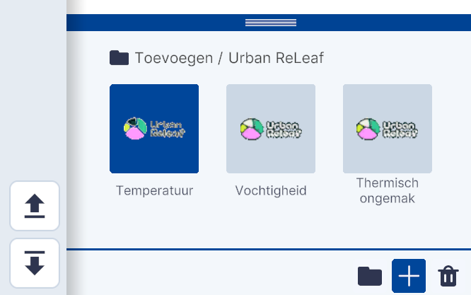
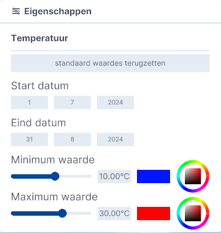
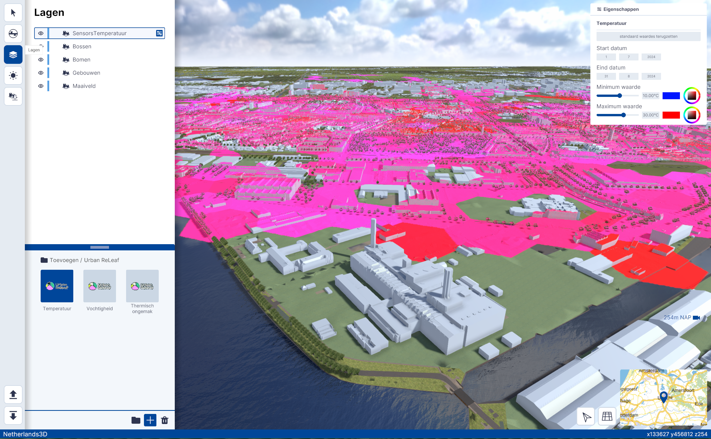

Urban ReLeaf
Functionaliteit, Lagen, submenu.
(Afbeelding) Toevoegen / Urban ReLeaf
Gedetailleerde beschrijving van de functionaliteiten
Met de functionaliteit Urban ReLeaf kunnen de resultaten van het Klimaatonderzoek dat van 1 juli tot en met 31 augustus 2024 is uitgevoerd in de Provincie Utrecht worden gekoppeld en gevisualiseerd.
Het klimaat is op drie factoren gemeten in de zones die als hexagoon worden weergegeven;
- Temperatuur
- Vochtigheid
- Thermisch ongemak
De kleur van de hexagoon vertegenwoordigd een gemiddelde van de gemeten waarden het gebied.
Toevoegen
Door op Temperatuur, Vochtigheid en/of Thermisch ongemak te klikken wordt de bijbehorende laag toegevoegd en worden de hexagonen geladen.

(Afbeelding) Toevoegen / Urban ReLeaf
Instellingen
Door in Lagen op het instellingen-icoon te klikken kunnen de eigenschappen van de (temperatuur) weergave worden aangepast.

(Afbeelding) Eigenschappen van de hexagoon-weergave
Datum
Met het aanpassen van de Start datum en/of de Eind datum kunnen de uitkomsten van een in –te-stellen periode worden weergegeven. Standaard zijn de uitkomsten van de start tot het eind van het onderzoek weergegeven.
Waarden
Met het aanpassen van Minimum waarde en/of Maximum waarde – door de schuif naar links of naar rechts te verplaatsen - worden de gebieden die binnen de in-te-stellen bandbreedte vallen weergegeven. Met de kleuren-tool kan het kleurenverloop van minimum- naar maximumwaarde worden aangepast.

(Afbeelding) Weergave uitkomsten Temperatuurmeting Urban ReLeaf
Kijk op https://urbanreleaf.eu/ voor meer informatie.